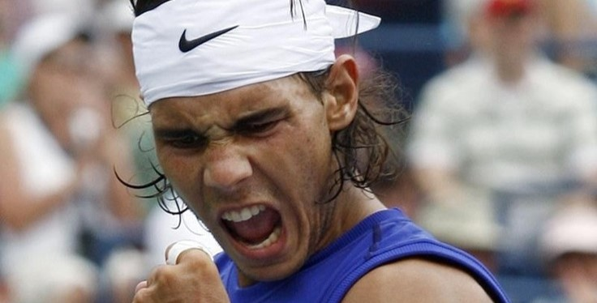
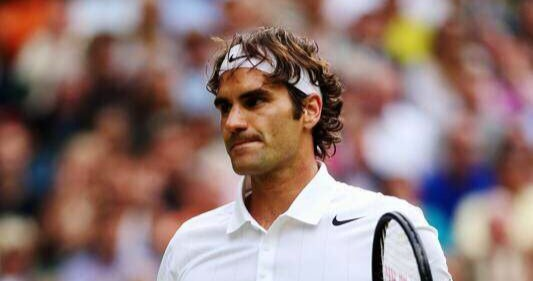
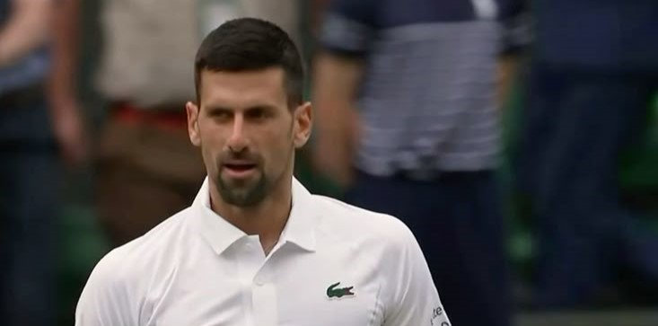
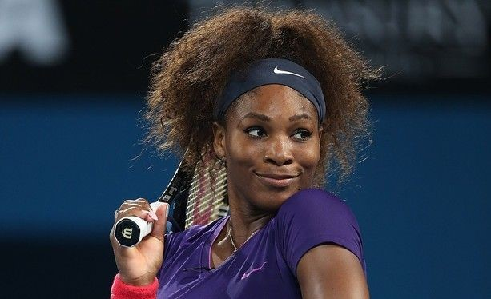

| Joueur / Joueuse | Titres du Grand Chelem (simple) | Surface de prédilection | Particularités |
|---|---|---|---|
| Rafael Nadal | 22 | Terre battue | Record de 14 titres à Roland-Garros, immense combativité et endurance. |
| Novak Djokovic | 24 | Toutes surfaces | Record du plus grand nombre de Grand Chelem, très complet et mental très fort. |
| Roger Federer | 20 | Gazon / dur | Connu pour son style élégant et ses nombreux titres à Wimbledon. |
| Serena Williams | 23 | Dur | Record féminin à l’ère Open, célèbre pour sa puissance et son service. |